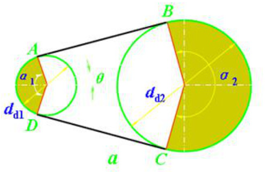

由带和带轮的组成传递运动和动力的传动.
| 带传动 | 摩擦传动 | 平带传动 |
| V带传动（最常用） | ||
| 多楔带传动 | ||
| 圆带传动 | ||
| 啮合传动 | 同步带传动 |
带传动在两带轮之间用带作挠性拉曳元件，利用传动带与带轮的摩擦力或啮合来传递运动和动力.
主要参数包角：带绕在带轮上时，接触弧所对应的中心角.
采用滑轨和调节螺钉或采用摆动架和调节螺栓改变中心距的张紧方式.
采用重力和带轮上的制动力矩，使带轮随浮动架绕固定轴摆动而改变中心距的自动张紧方法.
张紧轮一般放在松边内侧，使带只受单向弯曲，同时张紧轮应尽量靠近大轮，以免过分影响在小带轮上的包角.
传动带运转一段时间后带会松弛，为了保证传动能力，需加张紧装置，使得带与带轮接触区间产生正常的压力.
V带与V带轮结构普通V带楔角：\(\phi = 40°\)
V带轮槽角：\(\phi = 32°,34°,36°,38°\)
避免打滑的条件：具有足够的张紧力、包角与当量摩擦系数，但注意各参数都不应过大或过小.
带传动应力分析小轮的弯曲应力比大轮处应力大.
带中最大应力发生在小轮与带相遇点处.